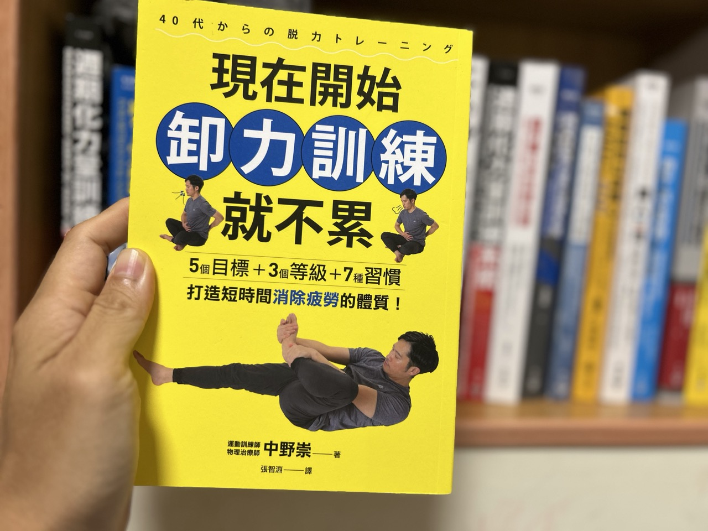

用力 vs 卸力｜兩者之間的因果關係

最近只要有空，我就會翻開中野崇教練的新書《現在開始卸力訓練就不累》。這本連同中野崇教練的前一本書《運動員都在做的疲勞恢復訓練》我都讀得很有收穫。
今天想分享的是今年八月出版這本的第三章〈在「卸力訓練之前」，希望你事先知道的事〉裡的一個小節：為了卸力，得先用力。
▎該用力的地方不用力，該放鬆的地方就鬆不掉
這個觀念我以前就知道，但經過中野崇教練的講解，有了更深一層的認識。
中野崇教練說，在卸力技巧中，他最重視的就是「為了卸力，得先用力」這個概念。因為人的身體若沒有對該用力的部位用力，讓該部位確實發揮機能，就無法適當地卸掉該卸力部位的力量（中野崇, 2026, 頁 110）。
我非常認同這樣的說法。該用力的地方不會用力，或該卸力、該放鬆的部位就沒辦法放鬆，這是互為因果的關係。
書中有一句話把許多人覺得緊繃，力量使不出來的狀態說得很精準：
❝ 對該卸力的部位用力，該用力的部位卻無法好好用力。 ❞
▎先畫出自己的「身體地圖」
書中第 113 頁有一張圖，用兩種顏色標出「該用力的部位」與「該卸力的部位」。
意思很清楚：我們得先知道具體是哪些部位該用力、哪些部位該卸力，才能針對該用力的部位去訓練，並讓該卸力的部位學會放鬆。
需要特別訓練用力的部位：
▹ 臀大肌下部
▹ 大腿後側上部內側（大腿後肌上部）
▹ 腋下後側
▹ 腹腔內壓（肚臍下方）
▹ 內收肌
需要特別訓練卸力的部位：
▹ 肩膀上部、肩膀側面（三角肌）
▹ 胸大肌、肱二頭肌
▹ 脖子後側、咬肌
▹ 肩胛骨之間（菱形肌）
▹ 腰部、臀中肌
▹ 大腿前側、大腿外側
▹ 前脛骨、小腿肚
▎用力，指的是「隨時能用力」
中野崇教練還特別強調一點：該用力的部位，也無須一直出力。
它要維持在「隨時能夠用力、隨時能夠產生用力反應」的狀態，而非持續緊繃（中野崇, 2026, 頁 112）。
我覺得這個觀念非常重要。很多人一聽到「核心要用力」，就整天把肚子繃著，結果該穩的沒穩住，反而連帶讓其他部位一起僵硬。
▎腹壓：讓軀幹像穿上束腹
在所有該用力的部位裡，書中特別著墨的是腹腔內壓（腹壓）。當然，它同樣是在需要的時候才用力。
腹壓來自被稱為「內核心肌群」的橫膈膜、腹橫肌、骨盆底肌與多裂肌，由它們合作產生。書中也說明了腰部為什麼特別需要它：腰部下方只靠一根腰椎支撐，結構本身不穩定，必須靠肌肉輔助（中野崇, 2026, 頁 114）。
如果能在該用力的時候提高腹壓，就會像穿上束腹一樣讓軀幹穩定。軀幹穩定了，活動手臂或雙腳時，作為根基的機能也會跟著提升，手腳就能放鬆，動作也會變得輕盈。
書中的這段分享講得非常到位。
▎卸力的五個目標與三個等級
依據這張身體地圖，書中接著提出卸力的五個目標：
❶ 腳部
❷ 腰部周圍（骨盆、腹部周圍）
❸ 髖關節
❹ 肩膀周圍
❺ 調整坐姿
卸力訓練再分成三個等級，要依序進行：
▹ 等級 1 重置型：卸除該卸力處的力量，重獲柔軟性，替恢復機能打底
▹ 等級 2 重啟型：改善骨骼錯位與循環狀況，重啟身體
▹ 等級 3 訓練型：從深層促進循環，讓該用力的部位開始運作
五個目標，分三個等級處置，由淺入深、層次分明。如果做等級 2 覺得不順，就回到等級 1，慢慢來（中野崇, 2026, 頁 116～117）。
放鬆，常常被當成一種「什麼都不做」的能力。
讀中野崇的書，讓我更深刻的體會到「放鬆是一種結果」：
先讓該出力的地方願意工作，
其他地方才敢把力氣交出去。
📚 參考資料
▹ 中野崇. (2026). 《現在開始卸力訓練就不累：5 個目標 +3 個等級 +7 種習慣，打造短時間消除疲勞的體質！》（張智淵, 譯）. 遠流出版事業股份有限公司.
▹ 中野崇. (2026). 《運動員都在做的疲勞恢復訓練》（蔡麗蓉, 譯）. 采實文化事業股份有限公司.